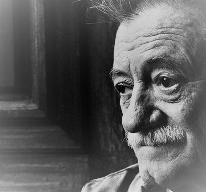

La Tregua
Este libro refleja el espíritu romántico y filosófico del autor. Está escrita como si fuera el diario del protagonista, Martín Santomé, y retrata la vida de un empleado a punto jubilarse, viudo, en el Montevideo de finales de los 50.

Mario Benedetti, excelente escritor, novelista y periodista que centró su carrera en la literatura y se convirtió en el personaje más importante para su país Uruguay, con una gran producción literaria, en la segunda mitad del siglo XX.
Desarrolló varias facetas y se convirtió en un personaje de gran relevancia, que realizo trabajos como novelista, dramaturgo, cuentista, critico, periodista y el más fundamental, un excelente escritor.
Este libro refleja el espíritu romántico y filosófico del autor. Está escrita como si fuera el diario del protagonista, Martín Santomé, y retrata la vida de un empleado a punto jubilarse, viudo, en el Montevideo de finales de los 50.
Todo es adrede, todo hace trizas el alma. ¿Nos traicionan nuestras propias huellas? ¿Qué diferencia hay entre un suicida inevitable y uno vocacional? A través de planteamientos como éstos, Vivir adrede reflexiona sobre la vida.
Pieza fundamental de la narrativa de Mario Benedetti, GRACIAS POR EL FUEGO novela una historia de frustraciones: la frustración de un asesinato y una frustración personal que es a la vez reflejo de la frustración general en que se mueve un país.
Este libro reúne los mejores poemas de amor de Mario Benedetti. Muchos de ellos están a flor de labio en la gente, que los recuerda de memoria o los tiene en mente a la hora de garabetear un verso; otros se han convertido en canciones y hasta en graffittis.